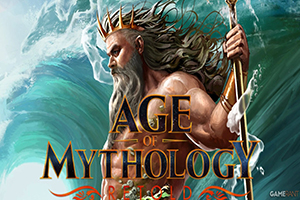
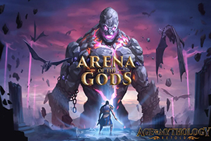

Age of Mythology Retold has reignited nostalgia for classic real-time strategy fans while introducing modern enhancements that bring the mythical battles to life like never before. With the latest update, new features, balance adjustments, and quality-of-life improvements have been introduced, making the legendary RTS even better.

Whether you're a veteran player revisiting the game or a newcomer experiencing it for the first time, this update offers exciting changes that impact both gameplay and visuals. Let’s dive into what’s new in the world of gods, titans, and legendary heroes.
One of the most significant additions in this update is the introduction of new god powers for each major pantheon. These divine abilities have been reworked to offer more strategic depth, allowing players to wield even greater control over the battlefield. Some powers have received enhanced visual effects, making their activation feel even more impactful.
The update also brings rebalanced myth units, ensuring that no civilization has an overwhelming advantage. Units like the Nidhogg and Chimera have been tweaked for better in-game balance, while certain abilities have been adjusted to make mythological creatures feel even more dynamic in combat.
For those who enjoy competitive play, the ranked matchmaking system has received improvements. New Elo-based ranking adjustments ensure fairer matchups, while improved server stability reduces lag and desync issues in online battles. The update also introduces new map variations, adding fresh strategic challenges to multiplayer skirmishes.
A highly requested feature, enhanced AI behavior, has finally arrived. Computer-controlled opponents now react more intelligently to player strategies, making single-player matches more engaging. AI-controlled units now manage resources more effectively, scout more efficiently, and adapt to enemy tactics, providing a greater challenge to those who prefer offline play.
Visually, the game has seen a significant boost. Improved lighting, texture upgrades, and enhanced water effects make the mythical world even more immersive. Buildings and unit animations have been refined to bring out more detail, ensuring that every battle looks and feels more dynamic.

The addition of remastered sound effects and re-recorded voice lines further enhances the atmosphere, making the game world more alive than ever before.
Another exciting feature is the introduction of new scenarios and campaign enhancements. Several missions from the classic campaign have been expanded with additional objectives, new enemy encounters, and reworked voice acting to bring the story to life in even greater detail. This update also includes bug fixes for previously reported issues, ensuring a smoother experience for players progressing through the single-player narrative.
Modding support has also been improved, giving the community more tools to create custom content. Players can now share and download mods more easily, with improved integration for new maps, custom civilizations, and gameplay tweaks.
Finally, the latest update introduces quality-of-life changes such as UI refinements, improved pathfinding for units, and better hotkey customisation. These changes streamline the gameplay experience, making it easier to manage large armies and issue commands during intense battles.
Overall, the latest update for Age of Mythology Retold breathes new life into an already beloved strategy classic. With enhanced visuals, refined gameplay mechanics, and a host of quality-of-life improvements, the game continues to evolve while staying true to its legendary roots.
Whether you're summoning divine powers, leading mythological armies, or competing against players worldwide, there has never been a better time to return to the battlefield. The gods are watching—are you ready to forge your legacy in Age of Mythology Retold?